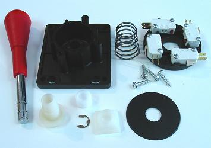
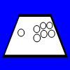
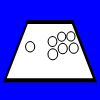

Joystick and Button Attributes and Brand Parts
This section on attributes and brands is fairly opinionated, but will do its best to convince that the opinions are strongly valid.
If you are getting a joystick for more than just a simple novelty, the decision of which brand and model parts you want in your joystick controller is as important as the decision to use a joystick over a control pad to begin with. This will determine much of your frustration or enjoyment with your controller, and, most importantly, how well you play your games.
No matter where you live in the world, two company names will be recommended by arcade joystick fans: Sanwa and Seimitsu, both Japanese companies. If you live in America, the parts with which you will most likely be familiar will be from the American company Happ. Happ is part of the same company as Suzo (Suzo-Happ Group as of a 2005 merger) which is its European counterpart with a strong presence in Europe centering on similar but unique parts developed before the merger. Industrias Lorenzo S.A. is another strong company in Europe and produces many joysticks with the same design Happ uses (in fact, IL designed and manufactured many of Happ's parts). If you live in Korea, you will most likely be familiar with the companies Crown, TaeYoung, and MyoungShin, which produce similar joysticks. And in countries around the world you will likely be most familiar with prominent companies located nearest you.
But just because a company is located nearest you does not mean it produces the instruments best suited for you. As an American I grew up with Happ parts, most notably in Street Fighter II cabinets. I thought I could look to the nostalgia of playing this game earlier in life and get Happ parts in a joystick controller and be happy with them. Yet I soon found out I would be better off with parts made by Sanwa or Seimitsu (and would have been growing up too).
This section will center a lot on Happ/IL, Sanwa, and Seimitsu in order to compare attributes in assessing joysticks and buttons and give a few easy choices that will not likely disappoint. When looking at brands outside these companies, there are things you should examine as shown in these comparisons.
Contents
Joystick Attributes
Top Handle
Tension
Deflection
Restrictor Gates
Engage Distance
Neutral and Engage Precision
Pivot Smoothness
Bulkiness and Mounting Height
Durability
Joystick Models
Joystick Chart
Sanwa
JLF
JLW
Seimitsu
LS-32
LS-40
LS-33
LS-55
LS-56
Happ / Industrias Lorenzo
Eurojoystick
Competition
Super
Joystick Components Mixing and Modding
Game Type
kowal Joystick Ratings
Buttons
Cylinders
Plungers
Switches
Engage and Throw Distance
Button Models
Button Chart
Button Components Mixing and Modding
Conclusion
Joystick Attributes
Top Handle
Most joysticks use either a ball top or a bat top. I tend to prefer ball tops as I feel grabbing a ball works more intuitively with my mind and hand than a tapered stick. I also prefer the smoothness of a ball top whereas bat tops usually have some texture. These are a matter of preferences, but most serious players prefer the ball over the bat. Simply put, ball tops make for many more styles of play than bat tops.
Image: Happ Competition top/shaft; bat, 40mm, 35mm, and 30mm tops and adaptor; Sanwa ball top screwed on shaft
Happ/IL joysticks generally come with bat tops, while Sanwa and Seimitsu joysticks usually come with ball tops. Sanwa and Seimitsu tops can be changed to bats simply by screwing on a different one of their available tops (and an adapter), while Happ/IL tops require a new shaft all together which a few independent modifying companies produce.
Sanwa and Seimitsu ball tops also come in 30mm, 35mm (standard), and 40mm diameters. Tops made by each company will work on both company's joysticks. Sanwa and Seimitsu joysticks (excluding the JLW-U) require an adaptor to fit Sanwa 40mm and bat tops.
Tension
The quickness of movements and the ability to hold them can be essential. If you have forces impeding your movements, your performance will suffer. This is where the strength of the spring and the weight of the shaft comes into play. Ideally, the spring should not exert a great force on the shaft, yet still exert enough force that neutral can be easily found and recognized, and the shaft should be light in weight so there is less inertia. Having a spring constantly pulling hard back to neutral is not comfortable.
Happ/IL joysticks are made with large, strong springs, while Sanwa and Seimitsu come with smaller springs of various strengths. Springs can be exchanged among certain models to modify tension.
Image: Top: various Happ/IL springs; bottom springs left to right: Sanwa JLF, JLW; Seimitsu LS-32, LS-40, LS-33, LS-55, LS-56
It can be put simply by asking what would give more quick and accurate movements, a stick in a pot filled with water or one filled with mud? The only type of joystick where strong spring resistance has a legitimate place is the analog joystick under games with movement speed sensitivity.
By far, the change in the strength of the spring will be most evident when changing from Happ/IL parts to most Sanwa or Seimitsu parts. The first reaction will be that the joystick is cheap and flimsy. It takes some time to get familiar with the looseness and understand why it is used. Also, if desired, the spring can be changed to give more tension. A looser spring also allows for more styles of play.
Deflection
When the joystick is released from a direction and springs back to neutral, there is usually a deflection in the opposite direction as the spring deals with the momentum of the shaft. Sometimes this deflection can briefly engage the opposite direction, and it can make finding neutral slightly more difficult. This problem can be mitigated using a stronger spring and/or a lighter shaft.
Happ/IL shafts, which are made of thick plastic and metal, are substantially heavier than Sanwa and Seimitsu shafts, which are made of thinner metal and very light plastic. Even with a heavy spring, Happ/IL shafts bounce around quite a bit, while Sanwa and Seimitsu joysticks tend to have less deflection, varying from model to model.
Deflection is an issue to which different players will give different importance. Some players hold the shaft the entire time, while others release it a lot of the time.
Restrictor Gates
A problem with Happ/IL is their joysticks do not use restrictor gates; they are all built with circular insides and all have circular movement because of this. Sanwa, Seimitsu, and other companies use a wide variety of restrictor gates, including circular ones. Seimitsu gates are a bit thinner than Sanwa gates, which makes them feel slightly less solid, but this is not a significant difference.
Image: Left to right: Sanwa GT-0 (circular), Sanwa JLF standard gate (square/rhombus), Seimitsu LS-32 standard bottom (variety)
As explained in another section, restrictor gates can enhance and improve your performance. Do not assume circular is the best or even adequate.
Engage Distance
The engage distance is the distance from neutral the joystick is moved before the desired direction engages. This determines the size of the deadzone, and, along with the restrictor, determines the size of each engage zone. Different players will like different engage distances in different games.
Happ/IL joysticks tend to have a small engage distance, Seimitsu vary, and Sanwa far.
Neutral and Engage Precision
Ideally, a joystick rests precisely midway between each of the opposing directions when at neutral. However, this can be off by a lack of precision in some parts, usually in the distribution of the spring and the straightness of the shaft. The distance of engaging one direction can be half the distance of engaging its opposite direction. Many joysticks come with extra parts that ensure the stick rests in a good position at neutral.
When a joystick has a small deadzone and a hard spring, slight inaccuracies in the neutral position can compound erroneous movements, especially on the diagonals. Happ/IL joysticks have a problem in this area of precision. You can look at the bottom of Happ/IL joysticks and spin the shaft and watch the actuator swivel around a bit (some samples are made better than others; if you are lucky, you might get a good one). You can then feel how engage distances can vary at different places of rotation. The depth of the Happ/IL shaft complicates this precision problem too. This is the biggest problem with Happ/IL joysticks.


Images: Happ Competition disassembled; Sanwa JLF disassembled
You will not notice these problems as much, if at all, in Sanwa and Seimitsu joysticks. Their neutral is not so strongly defined either; they have a small, loose swivel at neutral assisted by additional precision parts.
Pivot Smoothness
Sometimes imprecise parts within the joystick can adjust and readjust, which you will feel and hear as you play. It can give the joystick an uncomfortable feel, and even lightly hinder movements.
Image: Sanwa JLF pivot and housing for the pivot (hemispherical), Happ Competition pivot and housing for the pivot (cylindrical)
Problems with parts securing the spring usually cause the most problems in the pivot. The shape and fit of the pivot will cause problems to a lesser extent.
This can be a problem in Happ/IL parts. I actually resorted to placing rubber bands in a few Happ joysticks to better-settle the spring. Sanwa parts do not really have this problem. Seimitsu parts can have a bit of a problem in this area.
Image: Standard Japanese joystick lube
Sanwa and Seimitsu pivots (excluding the LS-33 and LS-55) actually use a bit of lube which sometimes needs to be reapplied (be careful when taking one of these joysticks apart and abstain from handling the pivot much). You can use official lube, or use a grease that is gelatinous like in a stick of lip balm (which has a very similar texture).
Bulkiness and Mounting Height
Happ/IL joysticks are bulkier than Sanwa and Seimitsu joysticks. The body (area excluding the protruding top of the shaft) of the Happ/IL joystick tends to be about 2-1/4" deep, while the Sanwa and Seimitsu bodies are about 1-1/2" deep. Plus Happ/IL joysticks tend to be installed deeper under the control panel than Sanwa and Seimitsu. Happ/IL joysticks tend to be about 1/3" to 2/3" under the panel top, while Sanwa and Seimitsu tend to be about 1/8" to 1/2".

Image: Happ Competition, Seimitsu LS-32, and Sanwa JLF side-by-side
For these reasons, a Sanwa or Seimitsu controller can be much less bulky than a Happ/IL one. But, because of a thicker panel, a Happ/IL joystick can in some circumstances be mounted more easily. Happ/IL joysticks seem designed more with large wooden arcade cabinets in mind, while Sanwa and Seimitsu also consider smaller cabinets and controllers.
Durability
Happ/IL joysticks are built mostly using thick plastic (some metal for the shaft and spring); Sanwa and Seimitsu are built using a mix of thinner metal and plastic. Happ/IL parts are highly durable and Sanwa and Seimitsu parts are a little less durable. This should not be a factor if your joystick is treated decently, and the joystick or parts of it can always be replaced.
Joystick Models
This part of the joystick section covers some details of different models of joysticks. Some of it includes descriptions of engages, restrictors, and mounting which are covered in others sections.
Below is a chart summarizing some information and ratings for some joystick models measured and compiled by the author of this site. Note that all measurements were done directly using precise instruments and may contradict some official diagrams that are inaccurate for some reason.
Joystick Model gives the maker and at least the early part of the model number; corresponding ratings include all models starting with those letters and/or numbers
Weight is the total weight of the joystick unit and is approximate because different parts can be added or removed
Body Diameter describes the width mainly of the housing just below the plate and excludes things like switches and gates
Handle To Plate is the distance from the bottom of the ball top handle to the top of the mounting plate
Plate To Base is the distance from the top of the mounting plate to the bottom of the joystick (ie the bottom of the shaft)
S-Plate gives the distance offset by the S-plate; the given number is usually added to the Handle To Plate and subtracted from the Plate To Base
Restrictors list the shapes of restriction available; "+" means it has to be purchased separately; "S" = Square, "R" = Rhombus, "C" = Circle, "O" = Octagon", "P" = Plus, "B" = Bar
Deflection rates how much the joystick bounces around when released from the throw distance (this can be lowered using stronger springs)
Engage Distance rates the distance the joystick moves from neutral before engaging directions
Throw Distance rates the distance the joystick moves from neutral before hitting the restrictors
Tension rates the strength of the spring
Pivot Quality rates how smoothly the joystick pivots around
Durability rates how well the joystick endures usage
Neutral Precision rates how well the joystick rests between the switches at neutral
Engage Precision rates the uniformity in the engage distance of each direction
Sanwa
Sanwa is the most popular arcade parts company in Japan. They have two main joystick models: the JLF and the JLW. Their parts tend to cost more, but have a strong level of quality. They use smooth gates and hemispherical pivots in their joysticks. Mounting plates for the JLF do not work for the JLW and vice versa.
Sanwa joysticks are generally mounted with 23mm-24mm of shaft between the top of the control panel and the bottom of the ball top, in a 24mm hole.
Images: Sanwa JLF-TP-8YT
The JLF is the gamer's most popular joystick. It is compact and has nicely spaced engages with great general precision. It uses non-levered microswitches. The JLF has many part numbers, but they mostly note the setup and plate on the joystick; there is not a quality difference among JLF part numbers.
All JLF joysticks come with microswitches set in a PCB. However, it can be replaced with individual microswitches with open terminals; this does not affect the height of the switches or gate.
To turn the gate included with this joystick, first remove the gate from the unit (move the gate slighting out of each tab, then pull it all off), note the two tabs near the gate itself, push the inside part of the gate with the tabs going away from it, and turn the tabs. The rhombus setting does not work very well for 4-way because the diagonals are still very easy to hit. The available octagonal gate has a corner to opposite corner distance the same as the square corner to opposite corner distance.
The JLF has a pair of tabs that stick out the sides of the housing; using these, it can be mounted without a mounting plate. It also has an S-plate available. JLF mounting plates are 1.6mm thick. Like most joysticks with a PCB, the PCB can be rotated to face beneath or outside the mounting area.
The JLF also has a shaft cover available in black.
Images: Sanwa JLW-TM-8; Sanwa JLW-UM-8
The JLW is not nearly as popular as the JLF. It is made of durable, high-quality parts, with very nicely set levered microswitches. The JLW-T has a thin shaft designed for a standard ball top, while the JLW-U has a thick shaft (that only fits Sanwa bat and 40mm ball tops) designed for a bat top; that is their only difference. The JLW-T has different lengths on the shaft, one designed for metal panels, the other for wood panels.
The square/rhombus gate it uses seems more designed for 4-way play. While the gate is set at a rhombus, the diagonals pretty much cannot be hit. This causes the engages while the gate is set at a square to be about as far as the throws, and the engage zones for the diagonals to be very small. The available circular gate has throw distances equal to the corners on the square/rhombus gate.
The spring in the JLW is pretty strong and will be uncomfortable to many players. All JLW joysticks use open switch terminals and no PCB. JLW mounting plates are 2mm thick.
Seimitsu
Seimitsu is the second most popular arcade parts company in Japan. Their main joysticks come in two families. The LS-32 and LS-40 are standards, while the LS-33, LS-55, and LS-56 are more compact designs. Their parts cost less than Sanwa parts, and do have a lower quality in a few areas. Their pivots are hemispherical (excluding the LS-33 and LS-55).
Their joysticks come stocked with a variety of gates (excluding the LS-56), but the gates are thin and have a bit lower-quality feel than Sanwa gates (this is not a big deal though). The 4-way, plus-shaped gates and 2-way, bar-shaped gates work well in all their models.
Joysticks using a PCB and wire harness have a "-01" added to the end of their part number (the LS-33 is the only model without the "-01" also available); individual microswitches and PCB versions can be interchanged in all models without affecting the height of the switches or gate. The PCB in each can be rotated to face beneath or outside the mounting area. All microswitches in Seimitsu joysticks are levered; the compact ones use shorter levers.
Seimitsu joysticks are generally mounted with 23mm-24mm of shaft between the top of the control panel and the bottom of the ball top, in a 24mm hole. Their mounting plates are all 1.6mm thick.
Images: Seimitsu LS-32
The LS-32 is Seimitsu's most popular joystick, and second in popularity among gamers to the JLF. It has moderate engage distances for quicker movements.
The LS-32 and LS-40 have similar design and use compatible mounting plates. Because they both have shallow shafts, they have an S-plate designed for them so they can be mounted in non-metal panels and certain brackets easier. The LS-32-01 version comes with the S-plate.
The larger gate that allows for the square gate actually gets in the way a bit, so the dark blue gate should be removed entirely for 8-way play. Also unique to the LS-32, both the plastic gates can be removed, leaving a large circle gate; the circle with very far throws actually has a pretty good feel to it.
When the stick is pressed somewhat hard against the gates, the spring adjusts and the stick jumps slightly. This may annoy some players.
Unlike all the other joysticks listed here, the bottom of the LS-32 shaft is secured with a C-ring instead of an E-ring. It is usually removed with special pliers, but it can be removed by looping a couple wires through the hooks and pulling hard; but if you want to put the ring back on using wires, you may need help from one or two people. Yet you can just replace the C-ring with a 7/16" (11mm) E-ring from a hardware store; it is kind of large and does not fit as snugly, but it does work.
Images: Seimitsu LS-40-01
The LS-40 is very similar to the LS-32, but is made more with plastic and has very short engage distances.
It has gates different from the LS-32 and more similar to the compact joysticks. The yellow and white gates work a little better than the LS-32 ones in that the open gate does not interfere with the square gate; but the plus-shaped and bar-shaped gates on the LS-32 feel better.
The LS-40 does not have the pivot problems that the LS-32 does. If you like or are indifferent to shorter engage distances, you may prefer this joystick over the LS-32.
The shaft cover for the LS-40 comes in different colors; the LS-55 uses the same covers.
Images: Seimitsu LS-33
The LS-33 is the smallest quality joystick around. Since it does not have an S-plate, it needs either a metal panel or some creative installment to use. If you manage to find a way to install it, a very compact controller can be made. It has far engage and throw distances, so the engage zones are nicely spaced. The spring is very light.
The LS-33, LS-55, and LS-56 have similar design with compact bodies and use compatible mounting plates and gates. Their gates work pretty much the same as the LS-40 gates, they have similar plastic content to the LS-40, and they do not have the pivot problem of the LS-32. The octagonal gate for the compact models has a largest radius equal to the smallest radius of the square gate.
The pivot in the LS-33 (and LS-55) is basically cylindrical; the base of the shaft cover tilts on a washer.
Though the LS-33 does not come in the "-01" model with a PCB, it can use the ones used by the LS-55-01 and LS-56-01. Funny thing is the PCB used by both has "LS-33" printed on it.
Images: Seimitsu LS-55
The LS-55 is very similar to the LS-33, but the shaft is longer and thicker and the spring has more tension.
The shaft cover for the LS-55 comes in different colors, using the same ones used by the LS-40.
Images: Seimitsu LS-56-01
The LS-56 has similar proportions to the LS-55, but the spring is heavier and uses a different pivot that seems to grind very slightly. It also comes with a different mounting plate, but, again, the plates can be exchanged among the compact models. It has medium engage and throw distances. And it does not come with the yellow part of the gate, but it can be added.
Happ / Industrias Lorenzo
The designs of Happ and IL (which were mainly made by IL) center on durability and cabinets. Their joysticks are bulky and do not fit well in a controller. They seemed to neglect many good attributes of a joystick in making simple arcade controls. Happ recently broke away from using IL-manufactured parts by making their own plant in China, and I think their quality has gone down a bit. I do not recommend either company's use in controllers anyways.
Happ/IL pivots are cylindrical.
Happ/IL joysticks can be mounted 1/3" to 2/3" below the control panel in a 1-1/8" hole.

Images: Industrias Lorenzo Eurojoystick
The IL Eurojoystick is the one of the main joysticks used in fighting games. A square actuator hits non-levered microswitches.
Images: Happ Competition Joystick
The Happ Competition is a slight mix on the Eurojoystick. It uses smaller microswitches and a different-colored dust washer.
Images: Happ Super Joystick
The Happ/IL Super is a simple levered-microswitches joystick. The actuator (one end is bigger than the other) can be flipped so only individual directions can be hit (well, sort of). This is a general-use joystick.
Joystick Components Mixing and Modding
Since many joysticks use the same components, and many have similar measurements, some of the components can be switched and used between models. One of the main advantages of this is that spring tension can easily be changed in some models. If available, you may want to order various complementary springs when you purchase a joystick.
Image: JLF modified to contain an LS-32 spring and open, softer Cherry microswitches (no added or special equipment needed)
Below is a list of general components, and models and the parts each can use from other joysticks. Since almost everything can be moved around between some models, for practical purposes, the body (ie the bulk secured to the bottom of the mounting plate) will be regarded as the core of each model. Components that can fit but do not work well are omitted; when a fit does not work as well, its downsides are noted.
Tops: As previously mentioned, tops from all Sanwa and Seimitsu models can be exchanged; the exceptions are the JLW-U and Sanwa 40mm and bat tops which have a larger diameter; adaptors are available to fit larger tops on the other models
Microswitches: Most standard microswitches have the same measurements and Sanwa, Cherry, Omron, and other microswitches can be exchanged, though the added levers can be different; Cherry microswitches are soft, Sanwa (JLW) and microswitches use by Seimitsu are medium, and Omron (JLF) microswitches are hard
Sanwa JLF: LS-32 LS-33 LS-40 LS-55 spring (LS-32 and LS-40 springs can go around and LS-33 and LS-55 springs can go inside along with the JLF spring); Eurojoystick Competition switches
Sanwa JLW: LS-32 LS-40 spring; LS-40 LS-55 E-ring; LS-32 LS-40 Super switches (no PCB)
Seimitsu LS-32: LS-40 spring (same); LS-40 gates; LS-40 shaft (with spring holder, actuator, and shaft covers; cannot pivot to touch the square gate); LS-40 mounting plates (same); LS-32 switches or PCB; JLW LS-40 Super switches
Seimitsu LS-40: LS-32 spring (same); LS-32 shaft (with spring holder and actuator); LS-32 mounting plates (same); JLW LS-55 E-ring; LS-55 shaft cover and dust cover (same); LS-40 switches or PCB; JLW LS-32 Super switches
Seimitsu LS-33: JLF LS-55 LS-56 spring (LS-56 not entirely solid); LS-55 LS-56 gates (same); LS-55 LS-56 switches or PCB (same); LS-55 LS-56 mounting plates (same); LS-56 shaft (with shaft covers, makes stick really high); LS-56 E-clip; LS-56 actuator (with spring and spring holder)
Seimitsu LS-55: JLF LS-33 LS-56 spring (LS-56 not entirely solid); LS-33 LS-56 gates (same); LS-33 LS-56 switches or PCB (same); LS-33 LS-56 mounting plates (same); JLW LS-40 E-clip; LS-40 shaft cover and dust cover (same)
Seimitsu LS-56: LS-33 LS-55 gates (same); LS-33 LS-55 switches or PCB (same); LS-33 LS-55 mounting plates (same); LS-33 shaft (with shaft covers, pretty snug, makes stick very shallow); LS-33 E-clip
Happ/IL Competition/Eurojoystick: Happ/IL springs
Happ/IL Super: Happ/IL springs; JLW LS-32 LS-40 switches (no PCB)
It is also possible to modify the components themselves. Microswitch insides and actuators can be padded for shorter engage distances. The click can be removed from microswitches. And some people go so far to make (and some sell) their own tops, shafts, actuators, and gates.
Game Type
A huge part of choosing a joystick can be the category of games for which you are using it. The main factor is whether or not momentary wrong directions are a big deal.
Since most fighting games (like Street Fighter and Tekken) use a quick series of directions for commands, the Sanwa JLF model is the most commonly recommended joystick for them for its well-spaced engage points.
Shmups (short for shoot’em ups like 1942 and Gradius) tend to prefer a smaller deadzone for quicker movements and are not sensitive to split-second wrong movements, Seimitsu LS-32 most commonly recommended for them.
For 4-way games (like Pac-Man), the JLF does not work well because diagonals are very hittable, so look to the JLW or a Seimitsu model.
For other game categories, a well-rounded joystick (usually with short engage distances) should do well.
Again, the emphasis is whether or not split-second wrong directions are a problem in choosing the proper joystick for the given game.
Keep in mind there is not always an enormous difference between using quality joystick "A" over quality joystick "B" for a given game category. There exists disagreements about what joystick best-fits what game (like some prefer the LS-32 for fighting games). The distinctions are not entirely cut and dry.
kowal Joystick Ratings
The joystick fan kowal developed a rating system for joysticks and has rated a large variety of joystick models (link).
He does the various ratings under the different models, modes, and gates. He notes the throw angle and travel distance, the engage angle and travel distance, the diagonal range (the angular distance covered by an engaged diagonal at the restrictor edge), the approximate diagonal hitting percentage (a comment on how easy it is to hit diagonals), the force required to engage (this is a way to gage the strength of the spring; note that a smaller engage distance will make this number smaller), and centering (the way the stick springs back to neutral) in dynamics (speed noted in percentages) and in reflecting (how much the stick bounces around before getting to neutral).
Buttons
Modern arcade gaming buttons (pushbuttons) consist of three main components; they have a hollow cylinder body with a rim that rests on a surface, a plunger which is a rooted face that gets pushed, and a switch; the plunger slides in the cylinder into a switch attached at the base of the cylinder. Some models contain an extra spring, but usually the tension in the switch is enough to reflect the plunger. The body has either flexing grooves or spiral grooves (along with a nut) for securing it to a panel.
Cylinders
A screw-in button (sometimes called threaded) has a spiral-grooved body to which a plastic nut is screwed securing the button to the panel. A snap-in button has flexing plastic grooves that hold it to a rigid panel 1.5mm to 4.5mm thick. Happ/IL does not make snap-in buttons, while Sanwa and Seimitsu make both.

Image: Sanwa OBSF-24 (snap-in), Seimitsu PS-14-DN (screw-in)
Choosing either screw-in or snap-in can be pretty straight-forward. If you are using a thinner, sturdier, precisely-made panel, snap-ins are an option. Screw-ins will work in any situation. But snap-ins can be used in thicker panels when thinner acrylic glass is used on the top layer; the panel below has to be given notches to fit the securers; the buttons are not necessarily very secure when this is done. Since snap-in buttons do not have nuts in the way, they can be given a layout that is a bit more compact.
The size for a button is given by the diameter of the hole in which it mounts; actual sizes vary slightly near that number. Happ/IL standard buttons install in 1-1/8" (28.5mm), Sanwa and Seimitsu standard buttons in 30mm, and small buttons in 24mm. Like their joystick counterparts, Happ/IL cylinders are bulky and run very deep, while Sanwa and Seimitsu cylinders are compact and run shallow. And as in the joysticks, Happ/IL buttons can be easier to install, but make for a much more bulky controller.
Plungers
A concave plunger is dented inward (like a bowl) while a convex plunger is either flat or bulges slightly (like a small bump). Sanwa and Seimitsu pretty much make convex buttons, while Happ/IL make some of both varieties (this is the only significant difference among Happ/IL models of standard buttons).
Image: Left to right: Happ Horizontal (concave), Happ Competition (convex), Sanwa OBSN-30 (convex)
Which to choose can be a matter of preference. I tend to prefer flat convex buttons. Concave buttons can feel a bit awkward because you can bump the edges of the buttons as you move your fingers around. And worse, when you press a more sloped part of the button, the button pushes into the side of the cylinder adding more friction. Convex buttons do not really have these problems.
As for the size of the face, generally the bigger relative to the button size, the better. A big face gives you a bigger target making the exact placement of fingertips less critical. Sanwa and Seimitsu standard faces are 24mm-26mm wide, small faces are 19mm-20mm wide, and Happ/IL faces are about 22mm wide.
Switches
The structure and feel of a button has a lot to do with the type of switch it uses.
When a standard microswitch is used, as it is in Happ/IL parts, the sound and feel comes with it. Standard microswitches are not very smooth; they contain deflecting metal plates, usually starting with heavier tension before being engaged, and then much lighter tension after being engaged. This is not bad for joysticks (in fact it can be somewhat helpful), and there is leverage in a joystick. But for a button, this impedes engagement, and makes rapid pressing of the button awkward. Plus the button has to be designed to a standard microswitch point that is not centered.
Image: Switches left to right: Cherry microswitches, Sanwa small switches, Seimitsu small switches, Seimitsu large switches, Sanwa long switches
A free and easy button is better, and this is why Sanwa and Seimitsu use different switches that are much smoother. They use centered switches containing a metal ball resting on a small spring that smoothly moves in and out of two metal plates. Among these, Sanwa and Seimitsu use small ones, with the Seimitsu version having a bit more tension. Seimitsu also uses large ones with slightly more tension than the small ones. The tension of the switch affects smoothness, and Sanwa seems to know the right tension a little better with their buttons still resetting quickly enough, so they are usually considered slightly better than Seimitsu.
There are also long switches available that are very durable (mainly currently offered by Sanwa). They use the same deflecting plates used by standard microswitches, but the deflecting is very soft and almost unnoticable, so they remain very smooth with very light tension. Plus some models of Sanwa buttons use plungers that are centered on the switches of standard microswitches.
Some older buttons use leafswitches which are a very simple smooth bending pair of thin metal plates; some players prefer these and work to find them, but Sanwa and Seimitsu buttons are very smooth without these.
The general precision of the plunger and cylinder also affects smoothness. Sanwa buttons are usually slightly better than Seimitsu buttons, which are both better than Happ/IL in this respect too.
The standard microswitches for Happ/IL buttons generally have .187" terminals, while the various straight switches for Sanwa and Seimitsu buttons have .110" terminal. Note that more clearance can be given for the buttons if the terminals are bent (this does not really affect the performance of the button).
Engage and Throw Distance
Like joysticks, buttons have different distances they are pressed before they are engaged. But the throw distance in buttons tends to be fairly uniform (about 2.5mm to 3mm), so this section will mainly center on engage distance. Engage distance depends on how the switch is set inside the button relative to the plunger and cylinder.
The engage distance in buttons is often called its sensitivity or responsiveness. Buttons with shorter engage distances tend to be more sensitive and responsive as they barely have to be pressed to be engaged. Proper engage distance can be a matter of preference. Some like buttons with very short engage distance so they can be pressed immediately, while other do not like the button to be pressed too easily because they feel it causes more errors, preferring a short but not very short distance. But most players agree that a deep engage distance is not the way to go.
Engage distance in buttons can vary a lot between models; they are rated in the chart below. Small switches used by Sanwa have a slightly shorter engage distance than those used by Seimitsu.
Button Models
Below is a chart summarizing some information and ratings for some button models measured and compiled by the author of this site. Note that all measurements were done directly using precise instruments and may contradict some official diagrams that are inaccurate for some reason.
Button Model gives the maker and model number
Size is the cylinder diameter ie the hole in which the button fits
Secure Type is what the button uses to mount to a panel, either snap-in or screw-in
Install Thickness is the thickness of panel to which the button can mount (note screw-ins get weaker toward the high thickness)
Plunger Diameter is the width of the plunger face
Surface Diameter is the width of the rim on the cylinder that rests on top of a panel
Nut Diameter is the width of the nut used by the model (screw-in)
Depth is the distance from the bottom of the rim (ie the top of the panel) to the bottom of the button; note that Sanwa and Seimitsu switches can be bent to trim the depth up to 7mm
Switch Type is the kind of switch, either microswitch, or a straight switch that is either small, large, or long
Tension rates the resistance of the button given by the switch and sometimes an added spring
Smoothness rates how evenly the button moves which is a fairly general evaluation on quality
Engage Distance rates how deep the button is pressed before it is engaged
Durability rates how well the button endures usage, mainly determined by the switch
Shade is how the buttons look in their various pigments
Face Image is whether or not an image can be placed under the plunger face, some means that not all versions have it
Button Components Mixing and Modding
A few things can be done in mixing button components. Faces can be mixed to give more color options, some switches can be changed to make the button slightly softer or harder, and a few nuts with different thicknesses and colors can be utilized.
Images: Happ Competition disassembled; Sanwa OBSN-30 disassembled
To open a Sanwa or Seimitsu button, first remove the nut (if it has one). The plunger must be removed before the switch can be removed. Push in the plunger tabs in the sides of the cylinder and pull the plunger upward and out. Then push in the tabs on the outside base on the switch and push the switch up and out the same direction the plunger came out. Put the button back together doing this in reverse.
To open a Happ/IL button, the microswitch should be removed before the plunger. Pull the long tab securing the microswitch and turn the microswitch away and out of the small tab. Then push together the two tabs for the plunger at the base of the cylinder and push the plunger up and out of the cylinder. Put the button back together doing this in reverse.

Image: Button pieces left to right: Seimitsu small, Sanwa small, Sanwa standard, Seimitsu Standard
Below is a list of the components and what can be exchanged. The cylinder will be regarded as the core of each model. Components that can fit but do not work well are omitted; when a fit does not work as well, its downsides are noted.
Plungers: I do not recommend exchanging plungers unless the models share identical versions; OBSF-24 and OBSN-24 have the same plungers; OBSF-30 and OBSN-30 have the same plungers; -RG Sanwa models use different plungers and cylinders from those that are not -RG models; OBSF-30-RG and OBSN-30-RG have the same plungers; PS-14-K and PS-14-P have the same plungers (and cylinders); PS-14-G-N and PS-14-K-N have the same plungers (and cylinders); a Sanwa 24mm button face can work in a Seimitsu 24mm button cylinder (not totally smooth); plungers can be exchanged between Happ/IL models (not totally smooth)
Seimitsu clear and pearl plungers (PS-14-K, PS-14-P, some PS-14-G-N, and PS-14-K-N) actually come in two pieces; inside pieces are the same for PS-14-K and PS-14-P; inside pieces are the same for some PS-14-G-N and PS-14-K-N; the outside plunger piece is the same for all PS-14-K, PS-14-P, some PS-14-G-N, and PS-14-K-N, meaning that pearl buttons can be given clear and tinted faces, solid screw-in buttons can be given tinted and pearl faces, and tinted clear buttons can be given clear and pearl faces.
Switches: Switches of the same types in the chart can be exchanged, so Sanwa and Seimitsu buttons with small switches can be exchanged to make them slightly softer or harder, and slightly change the engage distance; Happ/IL buttons use standard, non-levered microswitches, so any one of those can be inserted; long switches can be used in buttons using large switches, but large switches cannot be used by buttons using long switches
Aside from plunger exchanging giving more color options, the most noteworthy button modification is in Seimitsu buttons exchanging large switches for long switches. While this is a little expensive, it can make the decorated Seimitsu buttons function much better; they will go from medium tension to light tension, medium smoothness to very high smoothness, and medium engage distance to very short engage distance. The button will also be about 9mm deeper. The plungers and switches also both have female faces, so they will not hold together and the face can turn 2mm or so until the securers hit the sides (I think this actually feels fairly nice); this can be fixed by adding plates though.
Nuts: Happ/IL models use the same nuts; Sanwa and Seimitsu 30mm buttons have compatible nuts (24mm nuts are not compatible)
Happ/IL buttons can also be modified a bit by modifying the microswitch, or by removing the spring in the cylinder and making all the tension come from the microswitch (this makes the plunger very slightly crooked)
Conclusion
When choosing a joystick, look for freedom of movement, agility in movement, an agreeable restrictor, accuracy of the neutral position, equity of the engage distance in each of the directions, appropriate engage distance, a handle that works well with your hand, a smooth pivot, and general precision in the parts the company uses.
Sanwa and Seimitsu make high-quality parts which will not likely disappoint. Happ/IL is a company that seems centered more on simple, public vending parts with high durability at the sacrifice of precision.
Also, avoid using parts that are meant to be knockoffs of the ones manufactured by main companies (though Happ kind of does this). They will most likely have added problems no matter how good the model they are imitating may be.
I am not exactly a fanboy for Japanese parts, just quality parts. In fact, it is my opinion that many more Americans would compete internationally much stronger in many more games if our country’s standard/common joysticks were of better quality. I would very much like to see Happ/IL or some other company do better. I know there is a great deal of harping on Happ/IL in this section, but anyone is free to compare and confirm or deny the arguments given here.
What matters most is the gaming experience. You should be open to using parts and settings that may be different from the familiar standard.


 
